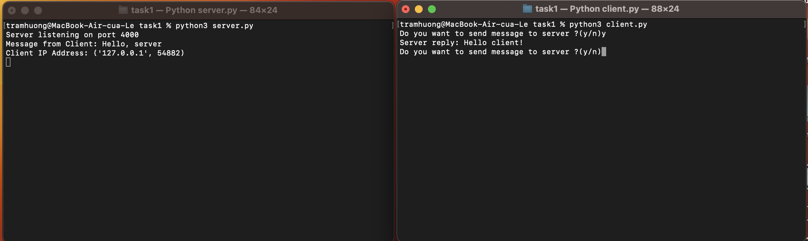

Задание 1
Реализовать клиентскую и серверную часть приложения. Клиент отсылает серверу сообщение «Hello, server». Сообщение должно отразиться на стороне сервера. Сервер в ответ отсылает клиенту сообщение «Hello, client». Сообщение должно отобразиться у клиента. Обязательно использовать библиотеку socket. Реализовать с помощью протокола UDP.
Выполнение
Реализация сервера
import socket
host = 'localhost'
port = 4000
def main():
s = socket.socket(socket.AF_INET, socket.SOCK_DGRAM) # Создание сокета UDP
s.bind((host, port)) # Привязка сокета к адресу и порту
print("Server listening on port", port)
try:
while True:
mess, addr = s.recvfrom(1024) # Получение данных от клиента
mess = mess.decode("utf-8") # Декодирование данных из байтов в строку
clientMsg = "Message from Client: {}".format(mess)
clientIP = "Client IP Address: {}".format(addr)
print(clientMsg)
print(clientIP)
s.sendto(b'Hello client!', addr) # Отправка данных обратно клиенту
except KeyboardInterrupt:
# Прерывание программы при получении сигнала Ctrl+C
pass
except Exception as e:
# Обработка других исключений
print("An error occurred:", str(e))
finally:
s.close() # Закрытие сокета
if __name__ == "__main__":
main()
Реализация клиента
import socket
host = 'localhost' # Хост (локальный компьютер)
port = 4000 # Порт для подключения
def main():
s = socket.socket(socket.AF_INET, socket.SOCK_DGRAM) # Создание сокета UDP
s.connect((host, port)) # Установка соединения с сервером
try:
while True:
user_input = input('Do you want to send a message to the server? (y/n)') # Запрос ввода от пользователя
user_input = user_input.lower()
if user_input == 'n':
break
s.send(b"Hello, server") # Отправка данных серверу
reply_message = s.recv(1024).decode("utf-8") # Получение ответного сообщения от сервера
print(f"Server reply: {reply_message}") # Вывод ответного сообщения сервера на экран
except KeyboardInterrupt:
pass
except Exception as e:
# Обработка других исключений
print("An error occurred:", str(e))
finally:
s.close() # Закрытие сокета
if __name__ == "__main__":
main()
Пример работы
